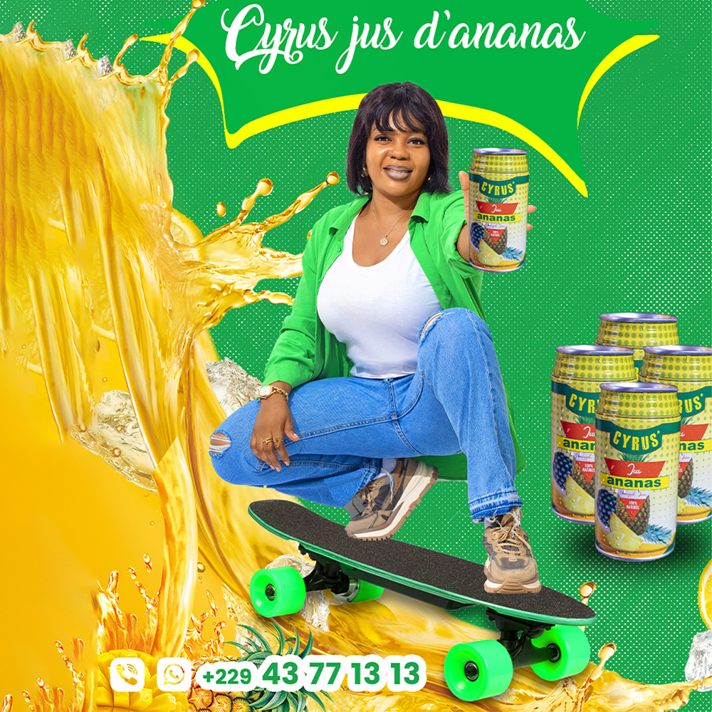

Loading...
Jus de Fruit Cyrus

Jus de Fruit Cyrus
Jus de fruit Cyrus propose de délicieux jus fabriqués à partir de fruits et légumes transformés en boissons savoureuses. Nos produits sont disponibles en bouteilles pratiques avec capsules, en packs de 6 bouteilles. Idéal pour se rafraîchir tout en profitant d'ingrédients naturels de qualité.
Pourquoi choisir Jus de Fruit Cyrus ?
- 100% naturel et sans additifs artificiels
- Disponible en format pratique
- Frais et savoureux avec des ingrédients de haute qualité
